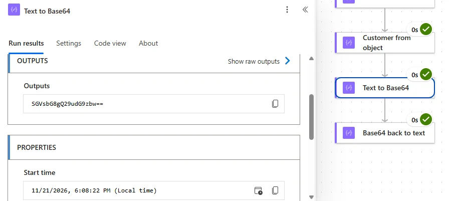

- Power Automate
- Level 1 · Foundations · 4 of 7
Data types and conversions
Every value in a flow has a type. Most errors that beginners hit, such as "expected Integer but got String", are type errors. Learn the six types and the handful of functions that convert between them, and these errors become easy to fix.
The six types, with examples
| Type | Example value | Looks like |
|---|---|---|
| String (text) | Product | "Laptop" |
| Integer | Quantity | 3 |
| Float (decimal) | Unit price | 49.99 |
| Boolean | In stock | true |
| Array (list) | Tags | ["hardware","office"] |
| Object (record) | Order | {"id":101,"customer":"Contoso"} |
Converting between types

string(variables('Order')) turns an object into JSON text, for example to put in an email.| Function | Does |
|---|---|
string(x) | Any value to text |
int('3') / float('49.99') | Text to a number |
bool('true') | Text to yes/no |
json('{"id":1}') | JSON text back to an object or array |
createArray(1, 2, 3) | Builds an array from values |
base64(x) / base64ToString(x) | Text to Base64 and back; used for file content |
Reading a field from an object
variables('Order')?['customer']| Piece | What it does |
|---|---|
variables('Order') | The whole object: {"id":101,"customer":"Contoso"}. |
?['customer'] | Reads one field by name, returning Contoso. Returns null instead of failing if the field is missing. |
Maths works the same way: mul(variables('Quantity'), variables('Unit price')) multiplies 3 by 49.99. Decimal maths can show tiny rounding extras, so format money for display with formatNumber(value, 'N2').
Base64: why files look strange

base64('Hello Contoso') returns SGVsbG8gQ29udG9zbw==. File content often travels this way.When an action returns file content, it is usually wrapped as an object with $content-type and $content (Base64). You rarely decode it yourself; pass it straight to the action that saves or sends the file.
New to this? Start from the basics optional
JSON: the text format flows use to show data. Curly brackets { } hold an object, square brackets [ ] hold an array, and text is in double quotes.
Null: "no value at all". It is different from an empty string ''. Use empty() to test for both.
Why types matter: a number stored as text sorts as text ("10" comes before "9") and cannot be added. Convert first.
Build it step by step optional
- Create an instant flow named Data Types.
- Add six Initialize variable actions: Product (String, Laptop), Quantity (Integer, 3), Unit price (Float, 49.99), In stock (Boolean, true), Tags (Array,
["hardware","office"]), Order (Object,{"id":101,"customer":"Contoso"}). - Add Compose Order total:
mul(variables('Quantity'), variables('Unit price')). - Add Compose Order as text:
string(variables('Order')). - Add Compose Customer:
variables('Order')?['customer']. - Add Compose Text to Base64:
base64('Hello Contoso'), then Back to text:base64ToString(outputs('Text_to_Base64')). - Test the flow and open each Compose card to compare the values.
Common mistakes
- Comparing a number with text in a condition, for example
'10'greater than9. Convert withint()first. - Calling
json()on a value that is already an object. It only accepts text. - Choosing the wrong variable type at Initialize. The type cannot change later in the run.